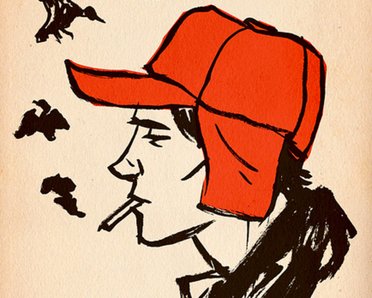

¿Sueñan las alumnas con novelas eléctricas?
Cita en el Terra Blues
Aún era pronto cuando llegué a Terra Blues, así que me decidí a entrar para escoger una buena mesa. No quería que Sally se estuviera quejando durante toda la maldita cita diciendo que no podía ver el espectáculo. Ella siempre era así, se quejaba del más mínimo detalle. Joder, que a veces no la soportaba. En cuanto entré, vi que estaba oscurísimo. ¡Jo! tío, más oscuro que un demonio. Estaba que explotaba de parejas besándose y todo ese rollo. Todos eran unos imbéciles que se habían conseguido alguna que otra puñetera chica con faldas cortas. Probablemente pensaban que la estaban presumiendo la mar de bien, luciéndose en lo que hacían. Me caían como cien patadas, pero en el fondo me daban pena. Me hice lugar entre la muchedumbre y logré sentarme en una mesa. Era imposible caminar. El olor a cigarro era insoportable, casi no se podía respirar, se los juro. Desde allí se podía ver el escenario. Pedí unos daiquiris helados. En Terra Blues le servían alcohol hasta a un niño de cinco años. Solo les importaba la pasta. Vaya cosa. El dinero siempre termina amargandole la vida a uno. La luz era tan débil que casi no se podía ver nada. No sé a quién se le había ocurrido crear esas malditas luces neón, que en lo que menos ayudaban era a alumbrar. Mi hermano mayor D.B. era muy bueno controlando luces. Ahora está estudiando arte en una universidad no muy lejos, en Nueva York. Es un escritor fantástico, me deja sin habla. Planea llegar al mundo del cine y volverse famosísimo. Por eso sabe tanto de las luces y todo ese rollo. Yo odio el cine, ni me lo nombren. Lleno de hipócritas asquerosos y gente que se ríe como hienas por cosas sin gracia. Entonces los actores con tanta adulación se creen buenos y entonces ya no lo son. Y siempre las mismas malditas historias que hacen llorar a lágrima viva a todos aunque ya sepan el final. Me revientan ese tipo de cosas. No sé por qué D.B. lo hace, seguramente por la pasta. Si mi hermano se volviera famoso algún día, rogaría que fuera con una historia distinta a las de siempre. Empecé a sentirme como un gilipollas ahí adentro, solo. Lo que hice fue preguntarle al mesero a qué hora comenzaba el show. De mala gana me contestó algo que no llegué a oír por el griterío del lugar. Deberían haber oído todo el ruido. Parecían millones de voces chillando y riéndose a lo tonto. Era insoportable. Allí solo había imbéciles que no hacían nada más que fumar y beber. Decidí que no valía la pena esperar a Sally allí sentado emborrachándome a lo bestia. Sally siempre te hacía esperar. Me saca de quicio ese tipo de personas. Me levanté y salí a tomar un poco de aire Estaba afuera pensando que Sally nunca vendría. Encendí un cigarrillo y empecé a fumar como una chimenea. Quiero decir, me fumé un paquete casi entero mientras la esperaba. No estoy seguro de cuánto tiempo pasó. Creo que una hora hasta que apareció y fui a su encuentro. Todas mis inquietudes desaparecieron cuando la vi, en serio. Estaba guapísima. De verdad. Llevaba un vestido que le llegaba un poco más abajo de las rodillas y un bolso blanco. Le sentaba realmente muy bien. No como a aquellas chicas que vestían igual pero les quedaba realmente mal, y por pena la gente les decía que les quedaba bien. Sally era única. De repente me dieron ganas de besarla. Creerán que estaba loco o borracho. Y tal vez lo estaba. -¡Holden! ¿Cómo estás?- dijo casi a los gritos, llamando la atención de toda la cuadra-. ¿Llego tarde? Le respondí que no. Aunque estaba retrasada más de una hora. Si la chica está guapa cuando llega, ¿a quién le importa que llegue tarde? A nadie. -¿Entramos? El show comenzará pronto- le dije. Aunque en realidad lo único que me preocupaba era que nos robaran la mesa. Justo antes de entrar le tendí la mano. No sé por qué lo hice, seguramente me quería poner cachondo antes de entrar. Me miró con una sonrisa forzada y supe que no le agradaba que la tomase de la mano. Probablemente yo la tenía sudada o algo así. Quizás por tanto alcohol que había tomado. Jane era la única chica que conocía a la que no le importaba, palabra. Nos tomábamos de la mano por horas, durante toda una salida. Como aquella vez que fuimos al teatro y no despegamos las manos ni una vez. Ni aunque sudáramos Entramos al bar y estaba igual de sucio como lo había dejado. Por suerte nadie nos había quitado la mesa. Nos sentamos y Sally me soltó la mano y se pidió una gaseosa. En poco tiempo unos señores con tacones altos y con pinta de maricas se subieron al escenario. Empezaron a cantar una canción de Margaret Whiting y la verdad que lo hacían bastante bien. Las dos primeras canciones sonaron estupendo a pesar de que las cantaron unos homosexuales y Sally decía a cada rato que le encantaba. Pero luego se empezó a notar que el cantante estaba desafinado. Era como escuchar a un perro llorando en medio del escenario, sólo que tenía un millón de kilos de maquillaje en la cara y unos grandes tacones. ¡Jo! Me alegro que no hayan estado ahí. En la cuarta canción ya me entraban ganas de matarme pero todavía faltaban más. Cuando ya habían tocado más de diez canciones vi que Sally empezaba a dormirse. En un momento se restregó los ojos y sin darse cuenta se corrió el maquillaje negro que se había puesto en las pestañas. Les juro que no podía dejar de ver su cara con el maquillaje corrido. No sé muy bien por qué pero me daba cien patadas. Quiero decir, daban ganas de que se diera cuenta sola y se arreglase; pero entonces se enojaría conmigo por no decírselo. Vaya cosa. Pensaba en todo aquello mientras Sally me miraba con cara de sueño. La verdad es que no sabía qué otra cosa había esperado ella al pedirme una cita. Las chicas son un misterio. Después de un rato que pareció interminable hubo una pausa. Me sentí agradecido, se los juro. Sally se desperezó, le dio un sorbo a su bebida y luego dijo: Estuvo muy bonito, ya quiero escuchar las siguientes canciones. Bonito un cuerno, no sé como a una mujer tan linda pueden gustarle cosas tan horribles y ser tan hipócrita a la vez ¡Si no había visto ni la mitad del espectáculo! De la nada oí el ruido de la puerta al abrirse, me di la vuelta y vi a un niño de unos seis años, harapiento y sucio, y nadie reparaba en él salvo yo. Él se acercó hasta una señora que tomaba cerveza sola en la barra y le habló en voz bajita pidiéndole algo, seguramente dinero. La mujer trataba de ignorarlo mirando para otro lado pero el niño le seguía tirando de la falda con cara de súplica. El chaval me daba muchísima pena. De repente me entraron unas ganas enormes de que se acercara a nuestra mesa y regalarle todo mi dinero. La señora le dio la espalda y con cara de incómoda le hizo una seña al hombre que cuidaba la puerta, señalando al niño con la cabeza. El hombre de bigote fue directo hacia el niño y sin decirle nada ví como tiraba con fuerza de su camiseta hacia la salida. Me irrité muchísimo y me imaginé a mi mismo pegándole un puñetazo a ese estúpido hombre de seguridad y dejandolo noqueado en el piso. Me imaginé las gotas de su sangre en mi puño cerrado, a Sally viniendo a consolarme y al niño sonriendo agradecido. Cuando quiero puedo ponerme bastante creativo. El niño hizo un movimiento brusco y se soltó. Entonces salió corriendo como un pequeño demonio adentrándose en el bar. Lo ví frenar en cada una de las mesas pidiendo limosna. Pero no se quedaba más de cinco segundos en cada una porque la gente se hacía la muy ocupada mirando el menú o sus relojes carísimos. Pensé que si hubiese sido una monja en lugar de un niño quien pedía la limosna, la gente hubiese sido amabilísima con ella y le hubiesen donado toda su pasta para la caridad y todo eso. Qué sociedad más hipócrita. El hombre de bigote corría tras el niño intentando atraparlo, tirando sillas y empujando meseros a su paso. Era como ver esos juegos de persecución que jugaba Phoebe con sus amigos en el parque en los que uno de ellos tenía que atrapar a los demás. La muchedumbre ya empezaba a darse cuenta del lío que se había armado y cuchicheaba disgustada. De repente el nene giró y se acercó a nuestro lugar casi llorando a viva voz. Me quedé paralizado mientras veía como se acercaba el hombre de bigote corriendo. De la nada, el niño se tiró de mí camisa, me abrazó y luego dijo: -Por favor ¡ayúdame!- dijo moqueando- Mi madre me dejó, no sé a dónde…- Sin terminar la oración una mano lo tiró para atrás desde el cuello casi ahorcado. El bigotudo lo miró enfurecido. Ya casi todo el bar nos miraba. Sally miró con su espejo su cara y luego se ocultó detrás de mí. El hombre se fue a la puerta y lanzó al crío como si fuera un animal. En serio. Y luego cuando cerraron la puerta escuché como gritaba el niño afuera. Seguramente estaba muerto de hambre y frío. De repente me deprimí. Se hizo un silencio en el bar. Luego todos empezaron a hablar y los maricas subieron al escenario. Pero ya no me acuerdo ni qué tocaron. Solo pensaba en el niño, lo que hacía que me deprimiera aún más. Sally se arreglo el maquillaje y luego me preguntó: ¿Y qué tal Holden? ¿Qué te parece la música? - Le respondí que me encantaba. Nunca había dicho una mentira más grande. Para mi suerte, al poco rato nos fuimos y Sally dejó un dólar de propina. No podía creerlo. Después de todo lo que había sucedido ella actuaba como si no hubiera pasado nada. Por lo único que parecía preocupada era por su apariencia. Todos miraban para el costado cuando tenían que ayudar al más necesitado. Estaba rodeado de idiotas hipocritas y Sally era igual a los demás. Al final, ella no era única. Todavía me acuerdo perfectamente de la cara sucia y empapada del niño, mirándome suplicante y rogando por ayuda.
Maldito jorobado en biciceta
Estábamos sentados en una banca con la hermosa de Sally cuando vi pasar a ese maldito señor; arrugado, con una joroba más grande que una montaña, la nariz roja y dientes amarillentos. Jo, me entró una rabia inmensa. Todos los viejos, cuando se aburren de su vida, lo único que saben hacer aparte de dormir es juzgar y quedarse viendo lo que ellos ya no tienen, amor. Jo, qué envidia más hipócrita. Para colmo, el viejo andaba en bicicleta. De pronto recordé ese día, ¡Jo! Que fastidio ese día.
Era el último partido del campeonato de baseball de mi hermano Allie. Me había escabullido del colegio con su bicicleta para ir a verlo jugar. Iba tan apurado qué tropecé contra un bache y me sangraron las rodillas, aunque no lo noté hasta que vi mis pantalones sentado en las gradas del estadio. ¡Jo! Cómo me regañó mi madre; me daba pena porque habían sido caros, pero también me daba rabia que el gobierno no arreglara esos malditos baches y usara nuestros impuestos para sus propios beneficios. La cosa es que cuando llegué al partido, el equipo de Allie iba ganando. No me sorprendí porque él era el mejor en baseball; era el mejor en todo lo que hacía. En cambio, yo no era capaz de andar en bicicleta sin rasparme las malditas rodillas ni para pensar un lugar decente para aparcar la bicicleta, ya que la deje tirada. El partido terminó y el equipo de Allie ganó con una gran ventaja sobre los rivales. Por esos tiempos, él todavía usaba ese guante tan raro, lleno de poesías. Los adultos no lo entendían, pero qué más da, ellos nunca entienden nada. Fui el último en salir de la cancha ya que todos los niños saltaban y gritaban festejando, y los falsos de sus padres no abrían paso. Detesto cuando hacen eso; pretenden emocionarse y festejar el logro de sus hijos cuando ni conocen el deporte, pero si sus hijos ganan, lo presumen orgullosos ante sus amistades y se creen superiores porque sus hijos atraparon un balón. Jo, son tan hipócritas. Cuando por fin logré salir de ese infierno, Allie ya se había ido y para colmo la bicicleta ya no estaba. Un cretino holgazán la había robado. ¡Jo! , lo único que saben hacer es robar a los que se esfuerzan, nunca he visto a uno de esos hipócritas vagabundos trabajando para ganar algo de pasta. Lo peor de todo esto es que la gente amable como Allie sufre las consecuencias. En fin, maldito jorobado en bicicleta.
El partido de Allie
Recuerdo aquella vez, hace un par de años, cuando era apenas un crío, no tan viejo como soy ahora, eso seguro. Era un día cálido, de esos que te hacen sentir que el verano se quedará para siempre. Allie estaba jugando en un partido de béisbol, y pensé en ir en bicicleta al parque para atrapar las últimas entradas. Sabes, solo para mostrar un poco de apoyo al pequeño.Así que allí estaba, pedaleando por la calle, el viento en mi cabello, sintiéndome como si fuera el dueño del mundo entero. Aseguré mi bicicleta a un árbol cerca del campo, no es que pensara que habría buitres esperando para abalanzarse y llevársela. Quiero decir, ¿quién podría ser tan desalmado como para robarle la bicicleta a un chico? Pero nunca se sabe, la gente puede ser tan falsa como el infierno a veces.Allie estaba en el plato, balanceando ese bate como si fuera asunto serio. Era bueno en esas cosas, no como yo. Nunca realmente pude entenderlo. Pero supongo que eso es lo que lo hacía único, a su manera. Golpeaba la pelota tan fuerte que pensarías que iba a volar hasta Timbuktu. Y yo, parado allí, tratando de no ser un completo idiota, vitoreándolo como un loco.El partido terminó y todos estábamos aplaudiendo y vociferando. El equipo de Allie ganó y tenía esa gran sonrisa en su rostro. Pero luego me di la vuelta y mi estómago cayó como si acabara de perder un millón de dólares. Mi bicicleta había desaparecido, simplemente se esfumó en el aire. Alguien la había agarrado, justo bajo mis narices.Me sentí como un completo idiota, ¿sabes? Como si debiera haber sabido mejor. ¿Quién deja su bicicleta desatendida, ni siquiera por un minuto? Pero esa es la cosa de los chicos, somos inocentes. Confiamos, creemos en la bondad de las personas. Y luego, la realidad nos golpea en plena cara, enseñándonos que no todos son sinceros.Permanecí allí, hirviendo de rabia y frustración. Los niños corrían por ahí, sus risas cortaban el aire como cuchillos afilados. Y no pude evitar pensar, "Qué grupo de falsos. Todos están jugando sus pequeños juegos, sin preocuparse por nada en el mundo." Sentí como si una parte de mí hubiera sido robada junto con la bicicleta, un pedazo de mi inocencia infantil, arrebatada por algún ladrón de pacotilla.Así que allí estaba, atrapado en ese momento, viendo cómo el sol se ponía, sintiéndome como un maldito idiota por dejar mi bicicleta desatendida. Pero ¿sabes qué? A veces la vida es así. Te lanza curvas, te hace cuestionarlo todo. Y aunque estaba enojado como el infierno, en lo profundo, no pude evitar pensar en la sonrisa de Allie cuando conectó ese jonrón. Tal vez la vida no sea tan mala después de todo. Solo tienes que mantener los ojos abiertos para esos malditos falsos, eso es todo.
Mr. Algo
Yo había ido a ver a Allie a su último partido de la temporada. Jo, que calor que hacía ese día. La gente estaba amontonada como cerdos, y eso eran. Cerdos que habían ido solo a ver el partido por las porristas jóvenes en minifaldas, con esas vestimentas que cuando saltaban mostraban hasta las bragas. Eran todos unos falsos, venían solo por obligación, ni siquiera les gustaba el deporte que iban a ver. Terminó el partido, y salimos, pero me dí cuenta de que la bicicleta en la que había llegado no estaba en el lugar en el que/donde la había dejado. Miré alrededor y lo único que vi fue al kiosquero. Pedro(Señor algo, mister algo, Ms. Algo, o un apodo) era un buen hombre, lo conozco desde que era un crío, siempre me regalaba paletas y esas cosas, a veces no te gustaban, pero las comías igual. La gente es muy falsa, estaba seguro de que Pedro me había robado la bicicleta, tenía muchas ganas de darle un puñetazo en la cara, pero me contuve porque no quería tener problemas con ese tío, podría contarle a mis padres y no quería eso. Miré otra vez a mi alrededor, y encontré a una pareja que me daba arcadas de ver porque se veía como el chico la atragantaba a la pobre chica con su lengua, odio cuando hacen eso, es tan desagradable de ver cómo de sentir, esta pareja pegajosa tenía una bicicleta atrás, tapada por una manta, y como si fuera coincidencia el color de la bicicleta era el mismo que el de la mía. Lo único que se me ocurrió fue acercarme y pegarle un puñetazo en la cara al hombre. Tenía tanta rabia que cuando estaba apunto de volver a pegarle sentí una mano en mi hombro. Me di la vuelta y me encontré con un policía, el típico policía que se hace el malo pero en realidad no es para nada rudo, como odio a esos policías, joder, este me dijo que lo acompañe. Yo lo seguí sin tener mucha alternativa, me preguntó que pasaba, y le conté todo esto, y él me dijo que qué demonios me pasaba a mi, y me entraron ganas de pegarle otro puñetazo a ese policía. Me dijo que debíamos dar una vuelta por la cancha para ver si encontrábamos mi bicicleta. Ahí la vi, con las ruedas medió desinfladas y con la pintura del manubrio algo despintada, exactamente como la había dejado, me quería suicidar, jo, había hecho tanto escándalo para nada.